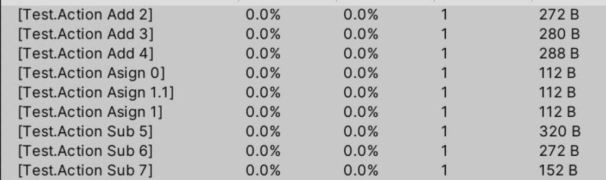
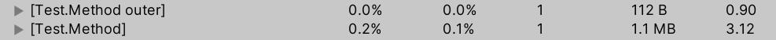
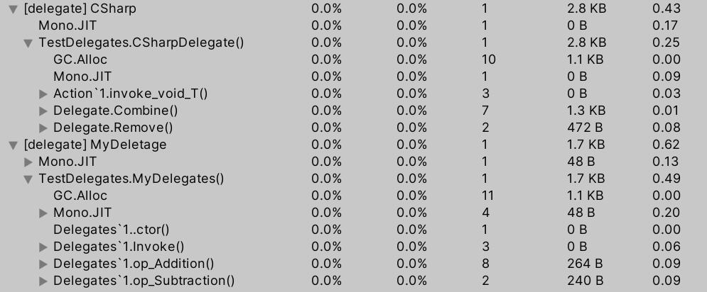

lambda闭包
void PostEvent(int id, Action callback)
{
// 过了一段时间后，调用回调
callback?.Invoke();
}
void Test()
{
int a = 0;
PostEvent(1, () =>
{
Debug.LogError(a);
});
}上述代码中，PostEvent方法执行到回调时，正常情况下，Test函数早就结束，临时变量a已经被被清理了。但是，PostEvent依然会打印出临时变量a的值，为什么？实际上，鼠标放在lambda的箭头上，vs会提示已捕获变量:a，被捕获的变量编译器会生成一个wrapper class，里面的成员变量就是a。
一些情况下，可以用以下方式优化掉wrapper class
void PostEvent(int id, Action<int> callback)
{
int a = 0;
// 过了一段时间后，调用回调
callback?.Invoke(a);
}
void Test()
{
PostEvent(1, (a) =>
{
Debug.LogError(a);
});
}再看以下部分，类似这种额外的内存消耗，完全没有必要
var list = new List<int>();
int Find(int id)
{
// gc alloc
var ret = list.Find(i => i == id);
// no gc alloc
foreach (var item in list)
{
if (item == id) return item;
}
return ret;
}委托自身内存消耗
UnityEngine.Profiling.Profiler.BeginSample("[Test.Action Asign 0]");
Action action = Callback;
action.Invoke();
UnityEngine.Profiling.Profiler.EndSample();
UnityEngine.Profiling.Profiler.BeginSample("[Test.Action Asign 1]");
action = Callback;
action.Invoke();
UnityEngine.Profiling.Profiler.EndSample();
UnityEngine.Profiling.Profiler.BeginSample("[Test.Action Asign 1.1]");
action = Callback;
action.Invoke();
UnityEngine.Profiling.Profiler.EndSample();
UnityEngine.Profiling.Profiler.BeginSample("[Test.Action Add 2]");
action += () => Callback();
UnityEngine.Profiling.Profiler.EndSample();
UnityEngine.Profiling.Profiler.BeginSample("[Test.Action Add 3]");
action += Callback;
UnityEngine.Profiling.Profiler.EndSample();
UnityEngine.Profiling.Profiler.BeginSample("[Test.Action Add 4]");
action += Callback;
UnityEngine.Profiling.Profiler.EndSample();
UnityEngine.Profiling.Profiler.BeginSample("[Test.Action Sub 5]");
action -= Callback;
UnityEngine.Profiling.Profiler.EndSample();
UnityEngine.Profiling.Profiler.BeginSample("[Test.Action Sub 6]");
action -= Callback;
UnityEngine.Profiling.Profiler.EndSample();
UnityEngine.Profiling.Profiler.BeginSample("[Test.Action Sub 7]");
action -= Callback;
UnityEngine.Profiling.Profiler.EndSample();profiler消耗
- 每次=号赋值，都会有112b的内存分配
- 每次+=也会有内存分配，并且越来越多
- 每次-=也会有内存分配，剩余的绑定方法越多，每次分配内存越多
再看一个例子
int count = 10000;
{
UnityEngine.Profiling.Profiler.BeginSample("[Test.Method outer]");
Action action = Callback;
for (int i = 0; i < count; i++)
{
Func(action);
}
UnityEngine.Profiling.Profiler.EndSample();
}
{
UnityEngine.Profiling.Profiler.BeginSample("[Test.Method]");
for (int i = 0; i < count; i++)
{
Func(Callback);
}
UnityEngine.Profiling.Profiler.EndSample();
}profiler消耗
- 经过缓存委托，内存分配，只有112b
- 没有缓存的，则是每次都会分配112b
自定义多播委托
public sealed class Delegates<T>
{
public List<Action<T>> RuntimeCalls
{
get
{
if (m_RuntimeCalls == null)
{
m_RuntimeCalls = new List<Action<T>>(8);
}
return m_RuntimeCalls;
}
}
private List<Action<T>> m_RuntimeCalls;
public Delegates()
{
}
public void Invoke(T arg)
{
if (m_RuntimeCalls != null && m_RuntimeCalls.Count > 0)
{
foreach (var call in m_RuntimeCalls)
{
call(arg);
}
}
}
public static Delegates<T> operator +(Delegates<T> delegates, Action<T> @delegate)
{
delegates.RuntimeCalls.Add(@delegate);
return delegates;
}
public static Delegates<T> operator -(Delegates<T> delegates, Action<T> @delegate)
{
if (delegates.m_RuntimeCalls == null) return delegates;
delegates.m_RuntimeCalls.Remove(@delegate);
return delegates;
}
}测试代码
void Start()
{
UnityEngine.Profiling.Profiler.BeginSample("[delegate] CSharp");
CSharpDelegate();
UnityEngine.Profiling.Profiler.EndSample();
UnityEngine.Profiling.Profiler.BeginSample("[delegate] MyDeletage");
MyDelegates();
UnityEngine.Profiling.Profiler.EndSample();
}
private void CSharpDelegate()
{
void Method1(int arg) { };
void Method2(int arg) { };
Action<int> action = Method1;
//action += Method1;
action += Method2;
action += Method1;
action += Method2;
action += Method1;
action += Method2;
action += Method1;
action += Method2;
action?.Invoke(1);
action -= Method1;
action?.Invoke(2);
action -= Method2;
action?.Invoke(3);
}
private void MyDelegates()
{
void Method1(int arg) { };
void Method2(int arg) { };
var action = new Delegates<int>();
action += Method1;
action += Method2;
action += Method1;
action += Method2;
action += Method1;
action += Method2;
action += Method1;
action += Method2;
action.Invoke(1);
action -= Method1;
action.Invoke(2);
action -= Method2;
action.Invoke(3);
}profiler测试
使用List之类的容器封装Action，不使用+=/-=，可以有效减少内存分配，一些常用的事件系统也是这么来处理的。
一般delegate直接使用EventHandler，事件参数使用多态来处理。
public void Listen(int eventID, EventHandler<GameEventArgs> handler)
{
EventComponent.Global.Subscribe(eventID, handler);
Listeners.Add(() => EventComponent.Global.Unsubscribe(eventID, handler));
}问题思考
Q. MulticastDelegate类里，每次调用CombineImpl/RemoveImpl都重新new了一个delegate数组进行操作。
.net为什么要这么做？
A. MulticastDelegate设计为immutable的，所以每次都重新创建了一个delegate对象，目的是确保线程安全。而List<Action>则不是线程安全的。